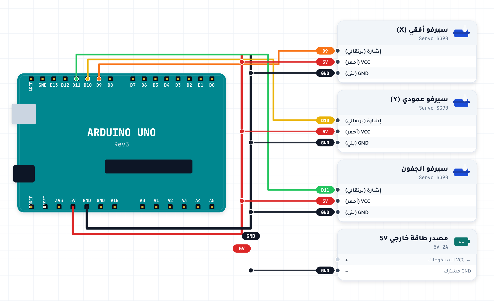

▶فيديو الشرح
ثلاثة محركات سيرفو تحرك مقلة العين أفقياً وعمودياً وتفتح الجفون وتغلقها بحركة طبيعية.
1المكونات
ARDUINO UNOboardسيرفو أفقي (X)Servo SG90سيرفو عمودي (Y)Servo SG90سيرفو الجفونServo SG90مصدر طاقة خارجي 5V5V 2Aأسلاك توصيلJumper Wiresلوحة تجاربBreadboard
2مخطط التوصيل

اضغط على المخطط لتكبيره · نسخة SVG عالية الدقة
| القطعة | الطرف | يوصل إلى |
|---|---|---|
| سيرفو أفقي (X) | إشارة (برتقالي) | D9 |
| سيرفو أفقي (X) | VCC (أحمر) | 5V |
| سيرفو أفقي (X) | GND (بني) | GND |
| سيرفو عمودي (Y) | إشارة (برتقالي) | D10 |
| سيرفو عمودي (Y) | VCC (أحمر) | 5V |
| سيرفو عمودي (Y) | GND (بني) | GND |
| سيرفو الجفون | إشارة (برتقالي) | D11 |
| سيرفو الجفون | VCC (أحمر) | 5V |
| سيرفو الجفون | GND (بني) | GND |
| مصدر طاقة خارجي 5V | + | VCC السيرفوهات |
| مصدر طاقة خارجي 5V | − | GND GND مشترك |
3الكود
المكتبات المطلوبة (من Arduino IDE ← Sketch ← Include Library ← Manage Libraries):
- Servo (مدمجة مع Arduino IDE)
/* المستوى المتقدم — المشروع 4: العين الروبوتية التفاعلية (Animatronic Eye) كتاب: 38 مشروع في شهر — لؤي النصري (@robotlouay) التوصيل: سيرفو الحركة الأفقية (يمين/يسار) → Pin 9 سيرفو الحركة العمودية (أعلى/أسفل) → Pin 10 سيرفو الجفون → Pin 11 تغذية السيرفوهات: مصدر خارجي 5V (2A) + توحيد GND مع الأردوينو عدّل حدود الزوايا بعد المعايرة حتى لا تنحشر الآلية. */ #include <Servo.h> Servo eyeX, eyeY, lids; // حدود آمنة لكل محرك (بعد المعايرة) const int X_MIN = 60, X_MAX = 120; const int Y_MIN = 70, Y_MAX = 110; const int LID_OPEN = 40, LID_CLOSED = 100; int curX = 90, curY = 90; void moveSmooth(int tx, int ty, int stepDelay) { // حركة ناعمة بدلاً من القفز tx = constrain(tx, X_MIN, X_MAX); ty = constrain(ty, Y_MIN, Y_MAX); while (curX != tx || curY != ty) { if (curX < tx) curX++; else if (curX > tx) curX--; if (curY < ty) curY++; else if (curY > ty) curY--; eyeX.write(curX); eyeY.write(curY); delay(stepDelay); } } void blink() { lids.write(LID_CLOSED); delay(120); lids.write(LID_OPEN); } void setup() { eyeX.attach(9); eyeY.attach(10); lids.attach(11); eyeX.write(curX); eyeY.write(curY); lids.write(LID_OPEN); randomSeed(analogRead(A0)); delay(1000); } void loop() { // نظرة عشوائية مثل العين الطبيعية int tx = random(X_MIN, X_MAX + 1); int ty = random(Y_MIN, Y_MAX + 1); moveSmooth(tx, ty, random(3, 10)); delay(random(400, 1500)); if (random(0, 10) < 3) blink(); // رمشة بنسبة 30% if (random(0, 20) == 0) { blink(); delay(150); blink(); } // رمشة مزدوجة أحياناً }
هذا المشروع يعتمد على مكتبات أو لوحات غير متوفرة في mBlock 5، لذلك نستعمل Arduino IDE. انسخ الكود من تبويب Arduino IDE.
4كيف يعمل؟
- زوايا عشوائية داخل حدود آمنة
- حركة ناعمة درجة بدرجة
- رمشات عشوائية للجفون
- مصدر 5V خارجي للمحركات
⚠ قبل توصيل الكهرباء: راجع كل سلك مع الجدول أعلاه، وتأكد من عدم وجود تماس بين 5V و GND. اختر اللوحة والمنفذ الصحيحين من قائمة Tools في Arduino IDE.